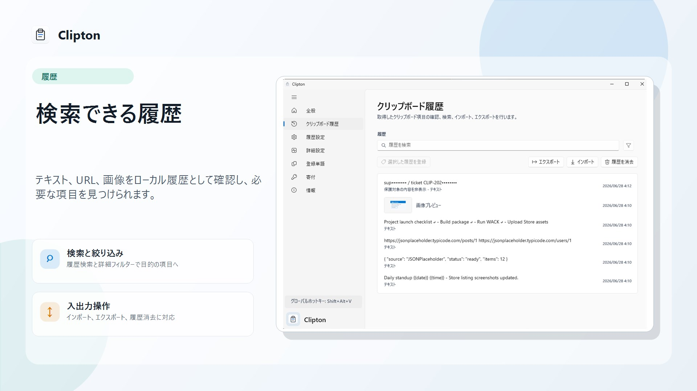
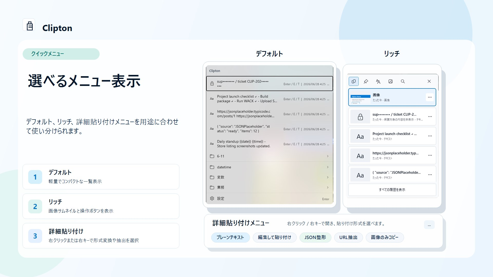
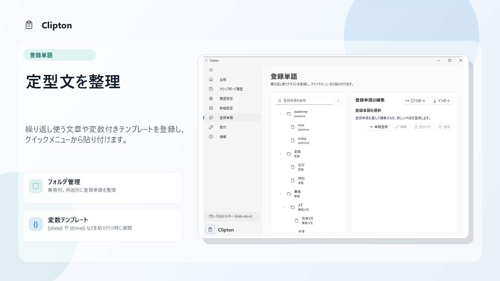
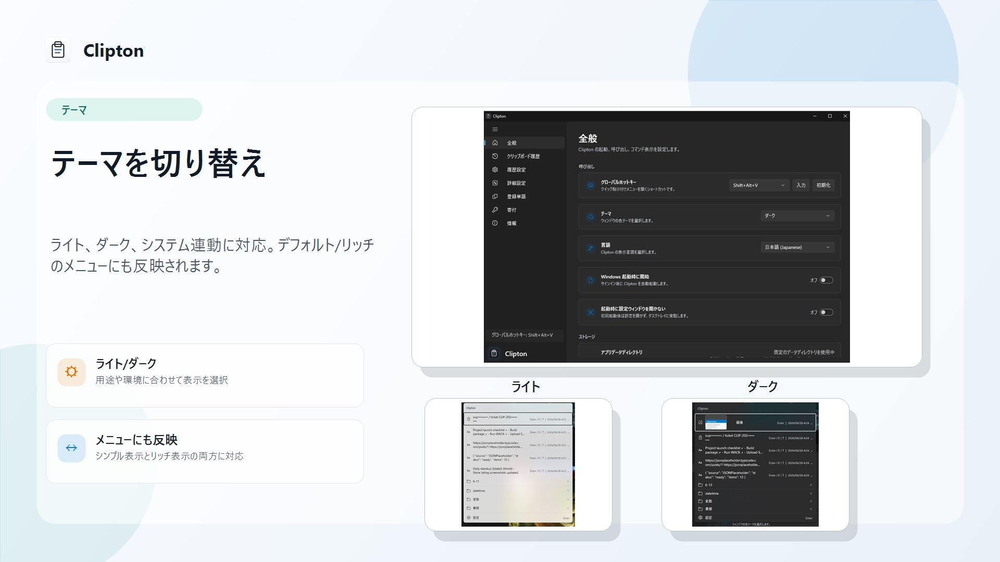
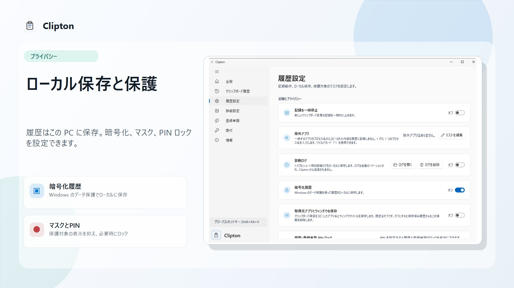

履歴をすぐ検索
テキスト、URL、画像をローカルに記録。ホットキーで開き、文字を入力するだけで候補を絞り込めます。プレーンテキスト貼り付けや JSON 整形にも対応します。
Clipton は、クリップボード履歴・登録単語・画像をホットキーですぐ呼び出せる Windows アプリです。検索して、選んで、そのまま貼り付け。作業の流れを止めません。
Find and paste your clipboard history without leaving the keyboard.

いつものコピー操作を変えずに、必要な履歴へすばやく戻れます。

テキスト、URL、画像をローカルに記録。ホットキーで開き、文字を入力するだけで候補を絞り込めます。プレーンテキスト貼り付けや JSON 整形にも対応します。

よく使う文章を登録単語として保存し、フォルダーで分類。日付やクリップボード内容などの変数をテンプレートに埋め込めます。

ライト、ダーク、システム連動テーマに対応。コンパクトな標準メニューと、サムネイル付きのリッチメニューを選べます。
Clipton は日常のクリップボードを扱うからこそ、保存先と制御を明確にしています。

高 DPI、ハイコントラスト、スクリーンリーダーへの対応を整え、日々の操作をより確実にしました。
導入前に知っておきたいことをまとめました。
Windows 10 バージョン 2004（10.0.19041.0）以降、および Windows 11 に対応しています。
送信されません。履歴はこのデバイス内に保存され、Windows のユーザー単位データ保護で暗号化されます。
はい。記録の一時停止や永続化の無効化ができ、対象アプリや機密文字列のマスクも設定できます。
GitHub Issues からご連絡ください。 GitHub Issues ↗